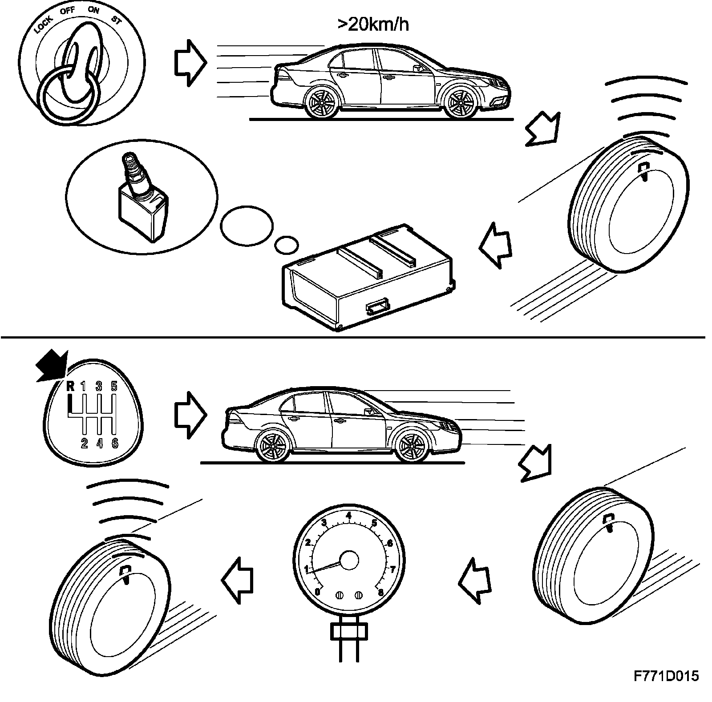
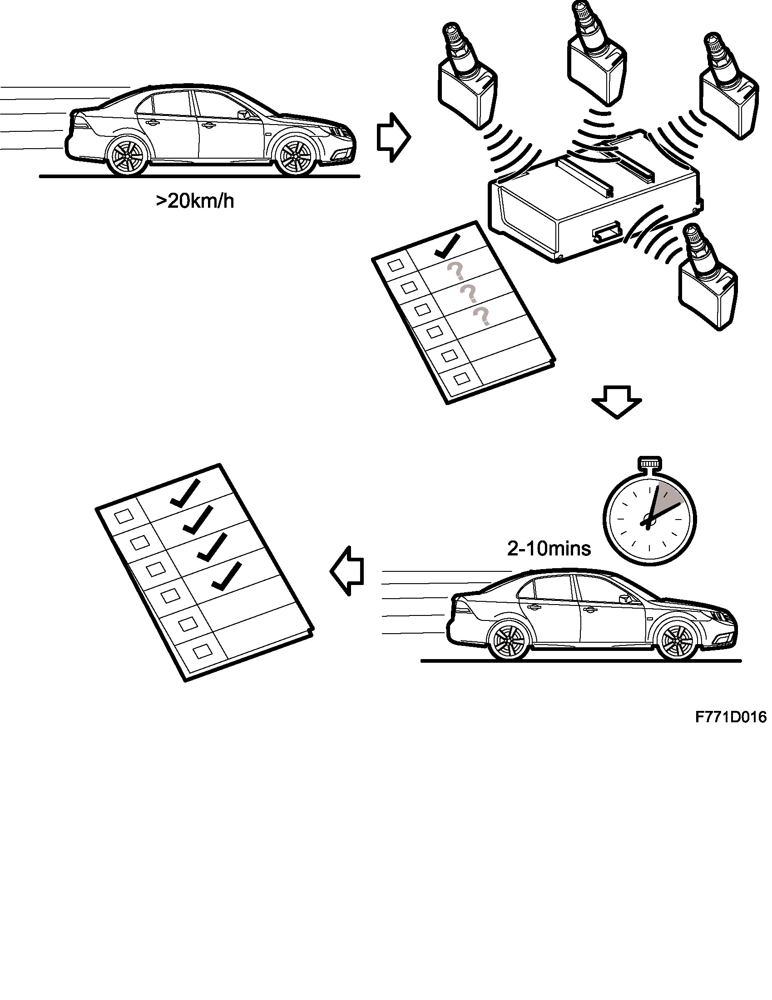
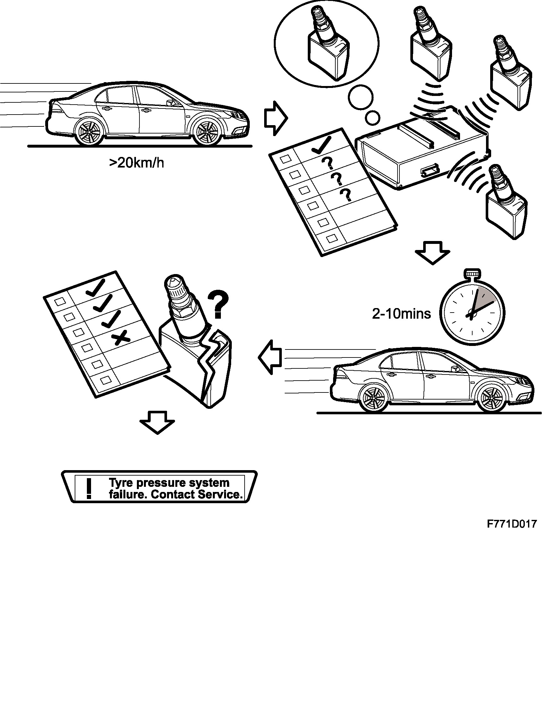
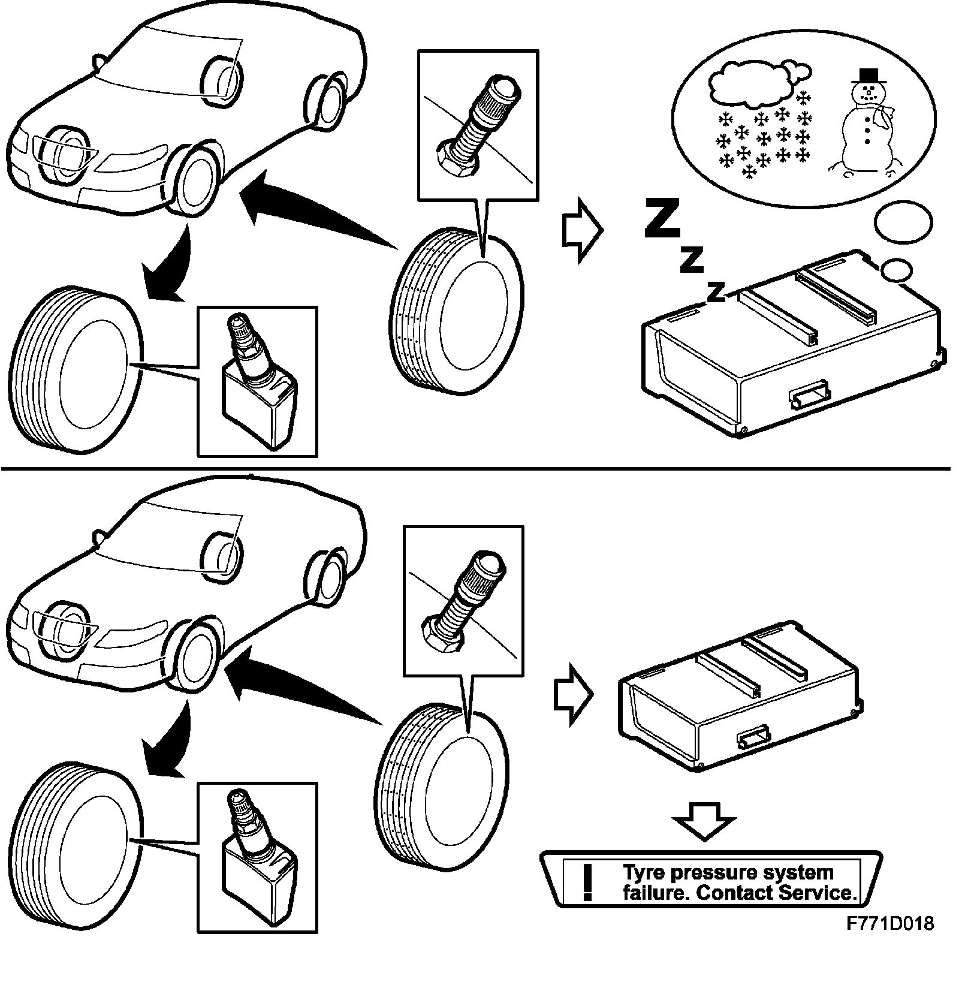

Tire Monitoring System: Service and Repair
If a low tire pressure warning light is observed, inflating the tire(s) to specified pressures and pushing the "clear" button will shut the light off.
^ The warning messages are cleared and removed from SID using the Clear button on the instrument panel.
^ If the fault condition remains, the message will be displayed at start-up until the problem is fixed.
^ With an "Alarm" message, only the message text can be deleted while the fault symbol is displayed until the fault is dealt with.
Active mode
The system activates when vehicle speed exceeds 20 km/h. The sensors then begin to transmit tire pressure information at regular intervals. If any value deviates from tire pressure limits, the control module transmits a warning or alarm message on the I-bus. MIU/SID reads the message and shows it on the display.

When reversing, the control module makes use of the bus message indicating reverse gear is engaged. It then does not read values from the sensors.
Standby mode
The system goes into standby mode when vehicle speed is below 20 km/h.
When in standby mode, the sensors continue monitoring tire pressure, but do not transmit the information. If any tire pressure falls to one of the alarm limits, a message is sent to the control module.
The sensors resume active mode when vehicle speed again exceeds 20 km/h.
Automatic teach-in
When warming up after start, the first period of the active mode is a teach-in procedure which lasts until each of the four sensors (which each have their own unique code) is identified. This communication "teaches" the control module which sensor works with each wheel. This procedure takes approximately 10 minutes. If the system cannot identify where the sensor it, it presumes that it is in the same position as it was the last time the car was driven.

If the control module does not receive communication from one or more (but not all) sensors within 10 minutes of driving over 20 km/h, a system fault message is transmitted on the I-bus. This is read by MIU/SID and shown on the display.

If the control module cannot make contact with the car's sensors during the teach-in phase, i.e. all wheels are missing sensors, the system automatically assumes winter mode, except in the US/CA markets. In these markets, the control module transmits a system fault message on the I-bus after each teach-in. This message is read by MIU/SID and is shown on the display.
